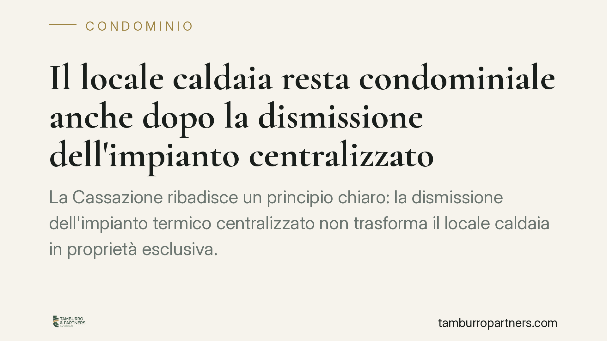

Il locale caldaia resta condominiale anche dopo la dismissione dell'impianto centralizzato
La Cassazione ribadisce un principio chiaro: la dismissione dell'impianto termico centralizzato non trasforma il locale caldaia in proprietà esclusiva. Lo spazio resta condominiale in forza della presunzione di comunione prevista dall'art. 1117 del codice civile. Una questione ricorrente nei condomìni passati al riscaldamento autonomo, con effetti concreti sulla gestione e sull'uso di quegli ambienti.

Il fatto
Molti condomìni hanno abbandonato negli anni il riscaldamento centralizzato per passare agli impianti autonomi o a sistemi di contabilizzazione individuale. La domanda sorge spontanea: che fine fa il locale che ospitava la caldaia comune? Diventa disponibile per un singolo condomino? Può essere venduto o assegnato in via esclusiva?
La Cassazione risponde in modo netto. La dismissione dell'impianto non incide sulla natura giuridica del locale che lo conteneva. Quello spazio, salvo prova contraria, resta un bene comune a tutti i condomini.
Inquadramento normativo
Il riferimento è l'art. 1117 del codice civile, che elenca le parti dell'edificio presunte comuni. La norma comprende non solo scale, tetti e fondazioni, ma anche i locali destinati a servizi comuni: tra questi rientra, appunto, il vano tecnico che ospitava la caldaia centralizzata.
Si tratta di una presunzione legale di condominialità. In termini pratici: il bene si considera comune fino a prova contraria. Chi sostiene di esserne proprietario esclusivo deve dimostrarlo con un titolo idoneo, cioè un atto di acquisto o un documento originario di formazione del condominio che escluda quel locale dalla comunione. Non basta invocare l'uso di fatto o il venir meno della funzione originaria.
Qui sta il punto centrale della decisione. La perdita della destinazione d'uso non fa venire meno la comproprietà. Il legame tra locale e collettività condominiale nasce dalla struttura dell'edificio, non dalla presenza attiva dell'impianto. Se la caldaia viene rimossa, il vano resta comune: cambia solo il modo in cui potrà essere utilizzato.
Implicazioni pratiche
Per i condomini questo significa che il locale caldaia dismesso non può essere occupato o utilizzato in via esclusiva da un singolo, neppure da chi ne detiene materialmente le chiavi o ne rivendica un uso storico.
Ogni destinazione diversa dello spazio — trasformarlo in deposito comune, in locale tecnico per altri servizi, oppure alienarlo — richiede il coinvolgimento dell'assemblea con le maggioranze previste dalla legge. Per gli atti che incidono in modo rilevante sulla destinazione del bene comune servono maggioranze qualificate; per la vendita o la modifica dei diritti di proprietà occorre l'unanimità dei condomini.
Per l'amministratore la conseguenza è gestionale. Il locale continua a far parte delle parti comuni: va inserito nell'inventario condominiale, sottoposto alle regole di manutenzione ordinaria e considerato nel riparto delle spese secondo le tabelle millesimali di proprietà generale.
Attenzione anche al fronte contenzioso. Chi rivendica la proprietà esclusiva deve produrre un titolo. In assenza, la presunzione dell'art. 1117 c.c. prevale, e l'azione di rivendica è destinata a essere respinta. Allo stesso modo, un'occupazione prolungata non fa maturare automaticamente un diritto: l'usucapione di una parte comune richiede il possesso esclusivo, univoco e continuato per il tempo di legge, con onere probatorio a carico di chi lo invoca.
Cosa fare in concreto
- Verificate il titolo originario. Prima di rivendicare o contestare la proprietà del locale, recuperate l'atto di costituzione del condominio e i rogiti di acquisto: solo un titolo può vincere la presunzione di comunione.
- Portate la questione in assemblea. Qualsiasi nuova destinazione del locale dismesso va deliberata con le maggioranze corrette. Evitate decisioni informali o accordi tra pochi condomini.
- Aggiornate l'inventario condominiale. L'amministratore verifichi che il vano risulti tra le parti comuni e sia gestito di conseguenza nelle spese e nella manutenzione.
- Diffidate le occupazioni di fatto. Se un condomino utilizza il locale in via esclusiva senza titolo, intervenite tempestivamente per interrompere il possesso ed evitare pretese future.
- Consigliamo una verifica documentale mirata in caso di compravendita di immobili nel condominio: la corretta qualificazione del locale evita contestazioni successive.
In sintesi
La funzione può cessare, la comproprietà no. Il locale caldaia resta condominiale finché un titolo non prova il contrario. Un principio che invita amministratori e condomini a gestire questi spazi con la stessa attenzione riservata alle altre parti comuni.
---
Contributo informativo a cura di Tamburro & Partners - Avv. Giuseppe Tamburro. Non costituisce parere legale.
Ogni condominio ha una storia a sé.
Se gestisci un'amministrazione e vuoi un confronto su una specifica questione condominiale, scrivi allo studio. Ti rispondiamo entro un giorno lavorativo.